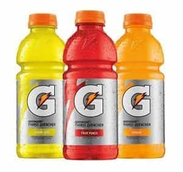
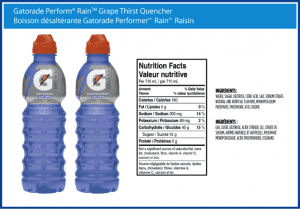
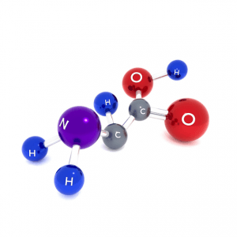
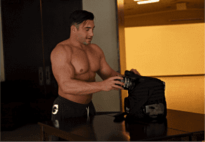

Sponsored Article is ROK's official account that publishes sponsored articles from advertisers. If you are interested hiring a sponsored article for your site, product, or service, visit our advertising page.


The following article was sponsored by Jonny Catanzano.
Hey guys, it’s Jonny — head trainer at the most subscribed fitness channel on YouTube. If you ever drink Gatorade or any other sports drink like Vitamin Water, this article’s for you…
Because you need to know how these so called “Sports Drinks” are holding you back from your true muscle building potential. I want you to think of the last Gatorade commercial you saw…

Man, they really do their best in making it look pretty awesome. And not only do they advertise constantly during sports events, they also probably sponsor many of your favorite athletes and sports teams.
Gatorade is incredibly popular. Literally millions of men drink Gatorade when they work out and even as a regular drink throughout the day, under the assumption that it’s “good for them”…
Gatorade has claimed that it’s a superior way to hydrate yourself, and that it can improve your athletic performance. And everyone just seems to believe them—no questions asked. But if you look at the scientific research, you’ll see these claims are absolutely false. And Powerade, Vitaminwater, and other sports drink brands aren’t any better.
The truth is that all sports drinks are actually unhealthy. They don’t make your workout performance better, and they actually cause you to gain fat. The biggest reason for this is that Gatorade and other sports drinks contain a massive amount of sugar. Just check out the nutrition facts:

Just one serving contains 42 grams of sugar, and 180 calories! That’s as many calories as you’ll burn directly from an intense hour long workout.
That means if you work out for an hour, and then drink a sports drink, you have basically cancelled out all of your hard work by dumping excess sugar into your body.
Sports drink marketers say that a huge amount of sugar is necessary because it improves athletic performance. But this is only true for professional long distance performance athletes, like marathoners or cyclists, who don’t have to worry about getting fat.
The truth is, for guys like us, looking to drop all our fat while replacing it with solid, rock hard muscles, there is no need to consume a huge amount of sugar every time you work out. The second problem with Gatorade is that it does not contain the ideal balance of electrolytes—minerals like sodium and potassium—for your body.
In my opinion as a trainer and nutrition expert, this balance of sodium and potassium makes no sense. The reality is that most people are deficient in potassium and are consuming far too much sodium already from their diets. Not only this, but Gatorade does not contain one of the most important and proven nutrients for enhancing athletic performance and improving your body’s muscle to fat ratio—free form amino acids.

If you don’t know what an amino acid is, they are the molecules that combine to form protein. Scientists refer to them as “the building blocks of your muscles,” because they’re one of the essential molecules your body needs in order to produce new muscle tissue and to repair the muscle tissue you already have.
And unlike sugar and sodium, amino acids are actually scientifically proven to improve your workout performance. According to the medical researchers at WebMD, amino acid supplements are proven to “improve exercise performance and reduce protein and muscle breakdown during intense exercise.”
So why don’t you see amino acids in sports drinks? Well, the truth is because corn syrup and sodium are far cheaper.
There’s no way that sports drink companies can afford massive advertising campaigns and multi-million dollar athlete endorsements while also selling a quality product that contains amino acids, so they choose to spend their money on marketing rather than the products’ ingredients.
That’s why I personally NEVER consume sports drinks. Instead, I consume an alternative that’s about the same price per serving, but which I can be 100% certain this is far better for me nutritionally.
And it’s called Afterburn Aminos.
The first reason that I prefer Afterburn Aminos over sports drinks is that it contains a premium blend of amino acids. And the amino acids in Afterburn Aminos are MUCH higher quality than what you’d find in a cheaper, generic recovery supplement.
Most amino acid supplements do not contain the proper ratio of branched chain amino acids. If you don’t already know, branched chain amino acids or BCAAs are some of the most important and scientifically proven amino acids.
Second, most cheap amino acid supplements contain no glutamine at all. Next to leucine, it’s the second most important amino acid and I feel no amino supplements are complete without it.
Afterburn Aminos gives you a full 2.5 grams of premium quality glutamine.
Not only does Afterburn Aminos contain a premium blend of amino acids, it also contains no sugar and no calories.
On top of that, Afterburn Aminos contains a far superior electrolyte blend with much more potassium than sports drinks contain. One serving of Afterburn Aminos contains a full 170 milligrams of potassium, compared to to a mere 80 milligrams in a large bottle of Gatorade.
The reality is, no supplement does you any good unless you take it regularly, and the great taste of Afterburn Aminos makes it easy to drink during every workout.
Most amino acid supplements taste like medicine, but the team at Afterburn Labs really nailed it with their amazing cherry lime flavor profile blend. It’s absolutely delicious, and I know you’ll love it once you try it.
→ Try Afterburn Aminos Now (New)
Let me know what you think,
Jonny C
